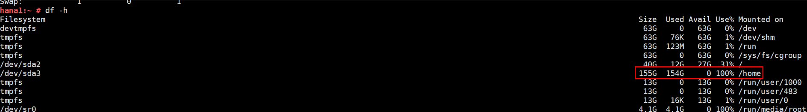

SAP HANA备份过程中由于存储空间不足，导致备份失败
现象描述
在备份过程中提示子任务失败，任务详情中提示错误码“110512”。
可能原因
备份过程中由于存储空间不足导致备份失败。
处理步骤
使用PuTTY登录SAP HANA数据库所在主机。
执行以下命令查询数据库生产环境剩余存储空间。
df -h
回显如下所示，其中home所在行显示的是数据库生产环境剩余存储空间。

父主题：
常见问题
版权所有 © 华为技术有限公司